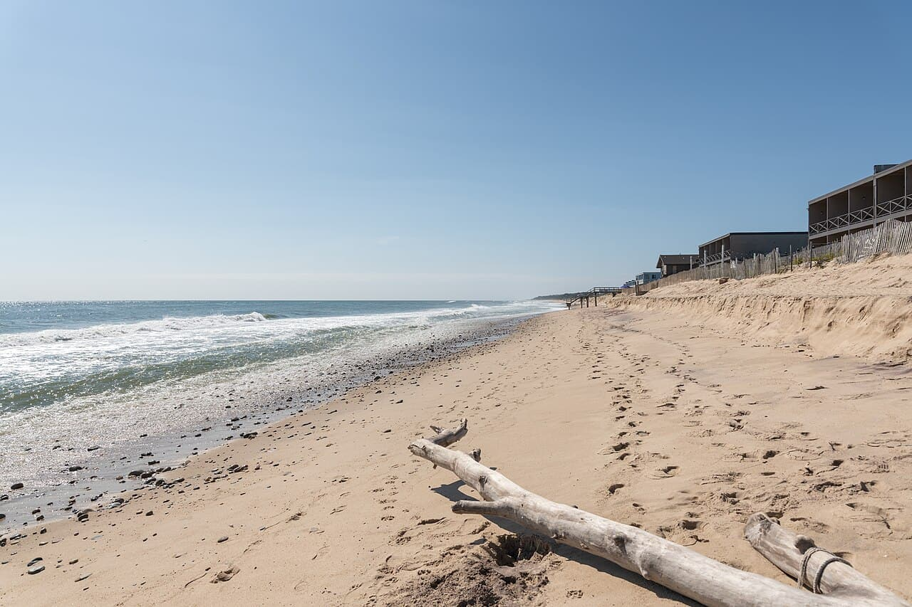

Montauk — Ditch Plains
New York, USA · surf, bodyboard, paddle

La pointe de Long Island, où une houle d’Atlantique nord rencontre un fond de galets. Vague de longboard l’été, plus sérieuse à l’automne quand les tempêtes arrivent.
- Lieu
- New York, USA
- Niveau
- Intermédiaire
- Activités
- surf, bodyboard, paddle
- Type d'eau
- Mer / océan
- Coordonnées
- 41.04, -71.92 (position approximative du secteur)
Dangers à connaître
- Fond de galets et blocs à marée basse.
- Pic très fréquenté le week-end en saison.
- Eau froide hors été.
Le conseil d'Ocean Buddy
En automne, la houle est plus longue et il y a beaucoup moins de monde, mais la vague devient plus sérieuse quand les tempêtes arrivent.
Ouvrir dans Ocean Buddy Télécharger sur l'App Store
Source : Description historique Ocean Buddy · vérification externe en attente.